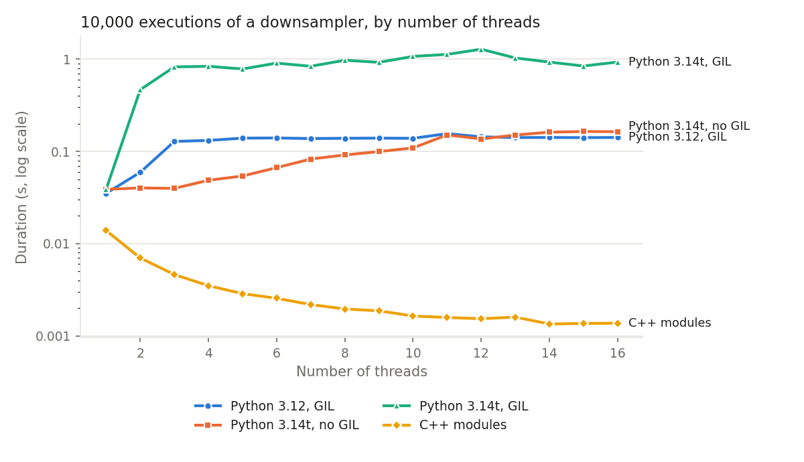

Writing a module in Python¶
When the processing you need is not available as a built-in module, you can write it
in Python. A spu.Stateless module holds tasks whose codelet, the function
executed by the task, is a Python function. Such a module is used exactly like the
built-in ones: its tasks can be called, bound, put in a sequence or a pipeline, and
duplicated on several threads.
Create the module, its task and its sockets¶
As an example, we write a module with a task scale that multiplies 8 floats by 2.
import streampu as spu
N = 8
mdl = spu.Stateless()
task = mdl.create_task("scale")
mdl.create_socket_in(task, "x", N, spu.float32)
mdl.create_socket_out(task, "y", N, spu.float32)
create_task(name)adds a task to the module and returns it;create_socket_in,create_socket_outandcreate_socket_fwdadd an input, output or forward socket to a task, given its name, its number of elements and its data type.
Write the codelet¶
The codelet receives the module, the task and a frame index, and returns a status
(0 means success). Inside the codelet, the data of the sockets is accessed without
copy through their numpy attribute:
def scale(module, task, frame_id):
x = task.x.numpy # or task["x"].numpy
y = task.y.numpy
y[:] = 2 * x # write the output in place
return 0
mdl.create_codelet(task, scale)
Warning
The output must be written in place (y[:] = ...). Writing y = 2 * x would
only rebind the local variable y and leave the socket unchanged.
The arrays are 2D (one row per frame): write the codelet so that it works on all the rows, as above.
Use the module¶
The task can now be called like any other task:
>>> x = spu.arange(0, 8, dtype=spu.float32)
>>> y = mdl.scale(x)
>>> y.numpy
array([[ 0., 2., 4., 6., 8., 10., 12., 14.]], dtype=float32)
It can be combined with operators and other modules, and replayed by a sequence:
Use spu.help(mdl) to display its tasks and sockets.
Several threads¶
A Stateless module is cloned automatically when it is part of a
multithreaded sequence. All the clones share the same
codelet function, so the codelet must not keep any state between two calls (in global
variables or in a closure): everything it needs must come from its input sockets.
With a regular Python interpreter, the codelets of the different threads cannot run Python code at the same time because of the GIL. Two solutions:
-
compile the heavy part of the codelet with numba and the
nogil=Trueoption, so that the compiled code runs without holding the GIL: -
use a free-threaded Python (3.14t) and run it with
PYTHON_GIL=0: the codelets of all the threads then run in parallel.
The scripts of examples/custom_python_module compare the execution times of a
Python module with different Python interpreters and numbers of threads.
Modules with a state¶
A Stateless module cannot hold parameters or data of its own. When the processing
depends on parameters or must keep data between two executions, derive a class from
Stateful_core. The example below keeps one sample out of F; F is the state of the
module:
"""Minimal example of a module written in Python with a state: keep one sample out of F."""
import streampu as spu
from streampu._ext.sfl import Stateful_core
class Downsampler(Stateful_core):
"""Stateful module with one task, `downsample`, that keeps one sample out of `F`.
The parameter `F` is stored as a Python attribute of the module: it is its state.
"""
def __init__(self, N, F=1, dtype=spu.float32):
super().__init__()
self.F = F
task = self.create_task("downsample")
self.create_socket_in(task, "input", N, dtype)
self.create_socket_out(task, "output", N // F, dtype)
self.create_codelet(task, Downsampler._downsample)
@staticmethod
def _downsample(mdl, tsk, frame_id):
# `mdl` is the module that executes the task: the original one or one of its clones.
# Always read the state from `mdl`, never from a `self` captured when the codelet was created.
out = tsk["output"].numpy
out[:] = tsk["input"].numpy[:, : out.shape[1] * mdl.F : mdl.F]
return 0
def clone(self):
# Called by StreamPU to duplicate the module on several threads. Only the Python state
# is copied here: the tasks, sockets and codelets are copied by StreamPU itself, so
# `__init__` must not be called again. `type(self)` keeps the class of subclasses.
other = type(self).__new__(type(self))
Stateful_core.__init__(other)
other.F = self.F
return other
It is used like any other module:
>>> from downsampler import Downsampler
>>> dwn = Downsampler(N=8, F=2, dtype=spu.int32)
>>> y = dwn.downsample(spu.array(list(range(8)), dtype=spu.int32))
>>> y.numpy
array([[0, 2, 4, 6]], dtype=int32)
Three rules make such a module work on several threads:
- Store the state as attributes of the module (
self.F). - Read the state from the
mdlargument of the codelet, never from aselfcaptured when the codelet is created: the same codelet is executed by every clone of the module, andmdlis the clone that executes it. - Implement
clone(). StreamPU calls it to duplicate the module, then copies the tasks, sockets and codelets itself.clone()must therefore create an instance of the same class,type(self), without calling__init__(which would create the tasks a second time), and only copy the Python state.
Note
Stateful_core is imported from streampu._ext.sfl: this part of the API may still
evolve.
The script examples/custom_python_module/custom_python_module.py uses this module in
a multithreaded sequence and measures its duration for different numbers of threads.
Performance with several threads¶
The script examples/custom_python_module/custom_python_module.py runs 10,000
executions of a sequence containing the Downsampler above, for 1 to 16 threads, with
different Python interpreters. As a reference, it also runs the same processing with
C++ modules (a relayer followed by a slice x[::4]).

| Configuration | 1 thread | 16 threads |
|---|---|---|
| Python 3.12, GIL | 35 ms | 142 ms |
Python 3.14t, no GIL (PYTHON_GIL=0) |
39 ms | 164 ms |
Python 3.14t, GIL (PYTHON_GIL=1) |
39 ms | 932 ms |
| C++ modules | 13.9 ms | 1.4 ms |
What it shows (note the logarithmic scale):
- The C++ modules are faster and scale with the number of threads: on 1 thread, they are 2.5 times faster than the Python module; on 16 threads, they run 10 times faster than on 1 thread, and about 100 times faster than the best Python configuration.
- The Python module does not scale: the work done by its codelet is tiny (a NumPy slice), so the cost of entering the Python interpreter at each call dominates, and adding threads only adds contention. With the GIL, the threads wait for each other and the duration increases with the number of threads; on Python 3.14t with the GIL enabled, this is particularly costly.
- Without the GIL (Python 3.14t,
PYTHON_GIL=0), the duration stays flat up to 3 threads and grows slowly afterwards, but never decreases.
To benefit from several threads with a Python module, give each call more work (larger
frames, several frames per execution with n_frames), release the GIL in the heavy
part of the codelet (numba with nogil=True), or write the module in C++.
Run examples/custom_python_module/perform_comparison.sh to reproduce these measures
on your machine.
When to write a C++ module instead¶
A Python codelet is convenient but each call has a cost. For processing that is executed very often on small data, write the module in C++: see Writing a module in C++.